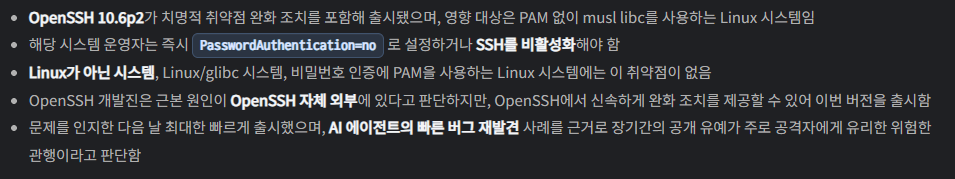

신규 취약점이 sshhole 나왔다.
alpine, openwrt 등에 쓰는 musl 기반으로 동작하는 openssh에서 257 자리 이상의 비밀번호가 입력될 경우, *로 치환되며 루트 권한으로 접속가능
이라는 치명적인 빅구멍이 발생했으니 즉시 업데이트 하도록
<해당되는 리눅스 와 조치법>
musl libc를 사용하면서 PAM을 사용하지 않는 Linux 시스템이 영향 대상이며, Alpine Linux가 그 예에 해당함
해당 환경에서는 즉시 PasswordAuthentication=no 로 설정하거나 SSH를 비활성화해야 함
모르는 관련자있으면 공유해라. 루트권한 탈취당하면 말그대로 대참사다


요즘 보안 관련 이슈가 엄청 많네..